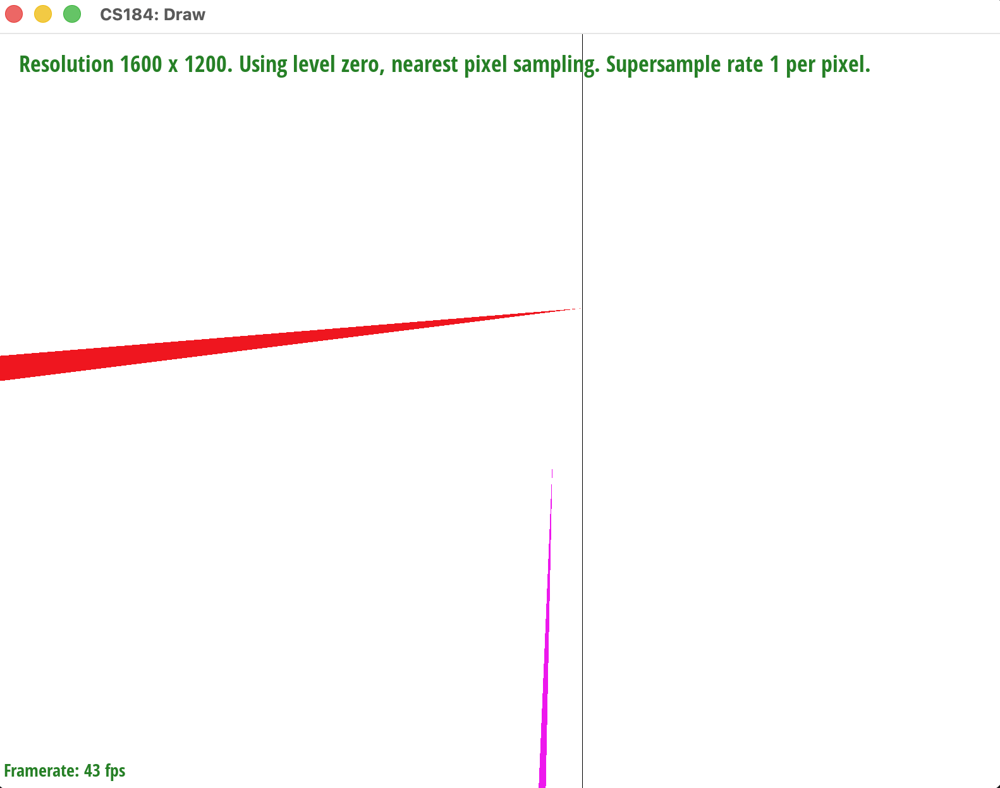
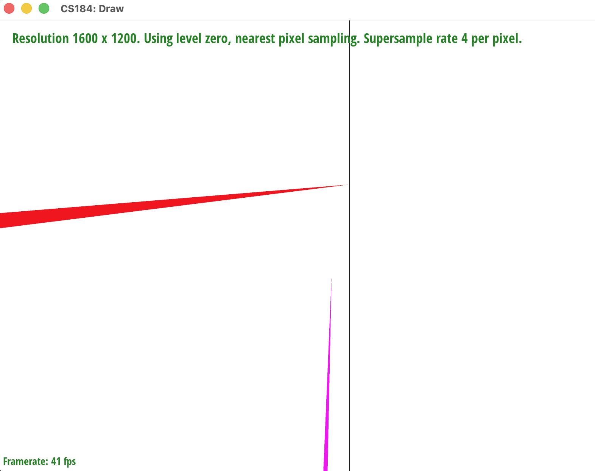
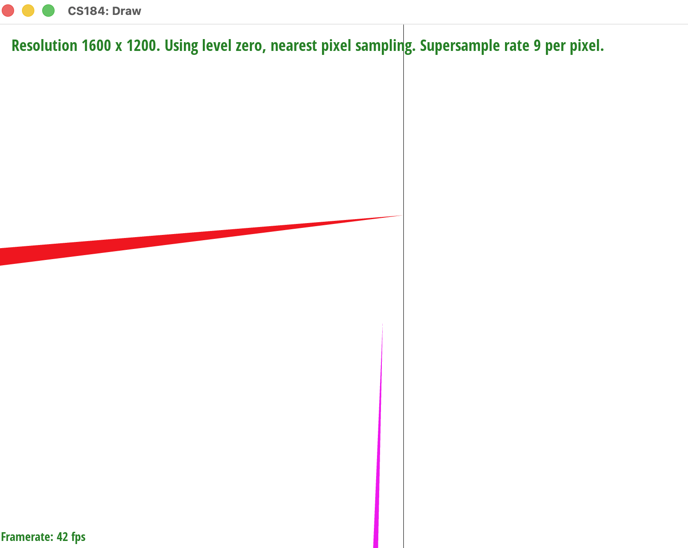
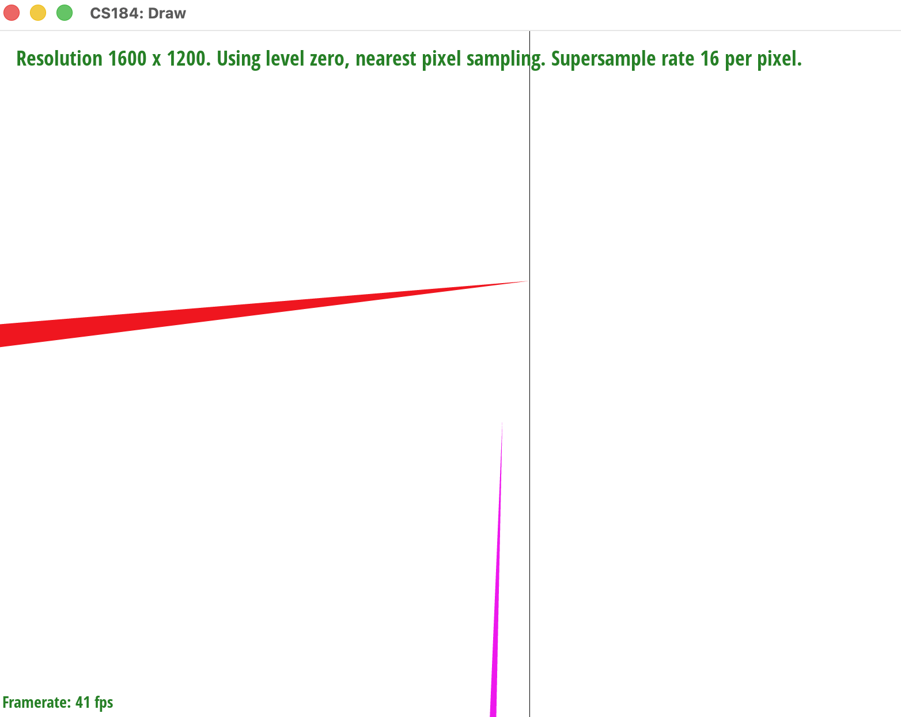

CS184/284A Fall 2026 Homework 1 Write-Up
Overview
In this homework, we implemented parts of a 2D vector graphics rasterizer. For Task 2, we extended triangle rasterization with supersampling to reduce aliasing along triangle boundaries. Instead of deciding whether a triangle covers a pixel using only one sample, the rasterizer stores several samples inside each pixel and averages them when producing the final framebuffer.
Task 1: Drawing Single-Color Triangles
This section is reserved for the Task 1 description and results.
Task 2: Antialiasing by Supersampling
Implementation
The rasterizer maintains a sample buffer with
width * height * sample_rate color values. For every
triangle, we first compute its axis-aligned bounding box and clamp
that box to the framebuffer. This avoids testing pixels that cannot
be covered by the triangle.
For each pixel in the bounding box, the implementation places samples on a regular square grid. For example, a sample rate of 4 uses a 2-by-2 grid, while a sample rate of 16 uses a 4-by-4 grid. Each sample is located at the center of its subcell:
To determine whether a sample is inside the triangle, we evaluate the 2D cross product for all three directed edges. A sample is covered when all three edge tests have the same sign. Checking both the all-positive and all-negative cases allows the test to work for either triangle winding order.
Covered samples receive the triangle color, while uncovered samples retain their previous value. Since the sample buffer is initialized to white when the buffers are cleared, uncovered samples represent the white background.
Resolving the Samples
After all SVG elements have been rasterized, the resolver computes the average color of the samples belonging to each output pixel:
The averaged red, green, and blue values are clamped to the range \([0,1]\) and converted to 8-bit values before being written to the target framebuffer. A boundary pixel therefore becomes a mixture of the triangle color and the background instead of an abrupt one-color transition.
Effect of the Sample Rate
At a sample rate of 1, each pixel has only one sample, so diagonal edges appear jagged when the edge passes through a pixel. Increasing the rate to 4 uses a 2-by-2 grid and gives a better estimate of the triangle's coverage. A rate of 16 uses a 4-by-4 grid and generally produces smoother edges.
The tradeoff is that higher sample rates require more edge tests, more memory, and more rasterization time. The improvement eventually becomes less noticeable because the result is still displayed at the original framebuffer resolution.
The current implementation assumes that the sample rates used for the square grid are perfect squares, such as 1, 4, 9, or 16. This matches the usual sample rates used for the assignment.
Testing our implementation




As the sample rate increases from 1 to 16, the jagged, stair-stepped edges seen at a sample rate of 1 are progressively smoothed out. By a sample rate of 16, edges blend gradually into the background instead of transitioning abruptly, confirming that supersampling reduces aliasing.
Task 3: Transforms
This section is reserved for the Task 3 description and results.
Task 4: Barycentric Coordinates
This section is reserved for the Task 4 description and results.
Task 5: Pixel Sampling for Texture Mapping
This section is reserved for the Task 5 description and results.
Task 6: Level Sampling with Mipmaps
This section is reserved for the Task 6 description and results.
Task 7: Extra Credit
This section is reserved for the optional extra-credit description.